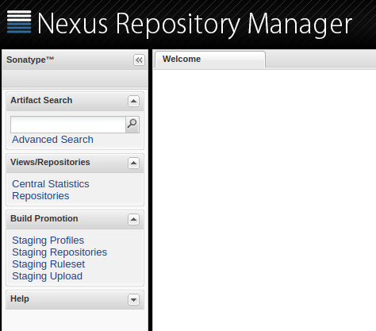
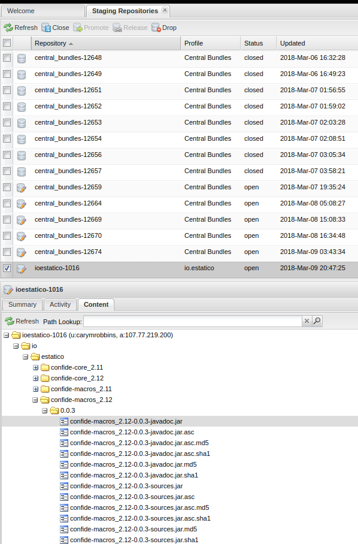
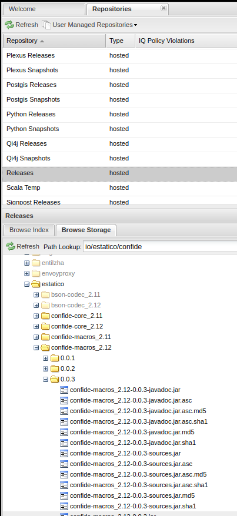

Publishing to Maven Central with SBT
Getting your first library published to Maven Central can be a intimidating at first, but once you’ve got it working the first time, especially for a particular Group Id, successive deploys are much simpler.
Creating a Sonatype account
First, you’ll need to have a Sonatype account. Go to the Sonatype JIRA site and create an account. Once done, submit a new issue to have your account activated and for access to deploy your new project.
The Group Id you choose must be a domain which you own (e.g. if you own example.com your Group Id will be com.example). Alternatively, you can follow this guide on picking an appropriate Group Id.
Once your ticket has been submitted an administrator will then comment on the issue letting you know if anything else is needed. Otherwise, you will be notified of configuration completion and be given the set of links to the repositories you will have access to deploy to. You will then be asked to do your first release. Follow the steps below for how to do this.
Setting up SBT
The following SBT plugins will be used in this guide. Add these to your project/plugins.sbt file.
addSbtPlugin("com.jsuereth" % "sbt-pgp" % "1.0.1")
addSbtPlugin("com.github.gseitz" % "sbt-release" % "1.0.4")
addSbtPlugin("com.dwijnand" % "sbt-travisci" % "1.1.0")
addSbtPlugin("org.xerial.sbt" % "sbt-sonatype" % "1.1")As always, you probably want to update the versions listed above to match the latest releases.
Next, update your project’s build.sbt file to match something like the following -
// This must be a domain that you own!
organization in ThisBuild := "com.example"
name := "example-library"
homepage := Some(url("https://github.com/example/example-library"))
licenses := Seq("Apache 2.0" -> url("http://www.apache.org/licenses/LICENSE-2.0"))
publishMavenStyle := true
publishArtifact in Test := false
pomIncludeRepository := { _ => false }
publishTo := {
val nexus = "https://oss.sonatype.org/"
if (isSnapshot.value)
Some("snapshots" at nexus + "content/repositories/snapshots")
else
Some("releases" at nexus + "service/local/staging/deploy/maven2")
}
scmInfo := Some(
ScmInfo(
url("https://github.com/example/example-library"),
"scm:git:git@github.com:example/example-library.git"
)
)
developers := List(
Developer("john", "John Doe", "john@example.com", url("http://john.example.com"))
)Be sure to update the URLs, license, developers, etc. to match your library.
Finally, create version.sbt file in the root of your project with the following content -
version in ThisBuild := "0.0.1-SNAPSHOT"I recommend always suffixing with -SNAPSHOT. When the release is ready we’ll remove the snapshot suffix, release as 0.0.1, and then bump to the next snapshot version 0.0.2-SNAPSHOT.
Travis
The travis plugin we added to plugins.sbt not only helps configuring a Travis CI build, it also simplifies setting up cross-Scala builds (libraries which support multiple Scala versions). Here’s an example .travis.yml file for cross building -
language: scala
scala:
- 2.10.7
- 2.11.12
- 2.12.4
jdk:
- oraclejdk8
branches:
only:
- master
cache:
directories:
- $HOME/.ivy2/cache
- $HOME/.sbt/boot
- $HOME/.coursierA couple things to note about this configuration - * The last Scala version, 2.12.4, will be used as the default for SBT commands. To run commands against all configured Scala versions, prefix your commands with +, e.g. +test. If you’re unfamiliar with this, be sure to check out the SBT Cross Building documentation. * The jdk setting is pretty self-explanatory, I’m sure you’ll figure it out. * We are setting branches.only to master so Travis will only auto-build master and pull requests; otherwise, branches associated with pull requests will be built twice. See the Travis Pull Request documentation for more info. * The cache configuration just allows Travis to reuse existing files, speeding up build times.
Next we’ll need to configure our Sonatype credentials by creating a sonatype.sbt file in our SBT configuration directory. For example, I’m using ~/.sbt/0.13/sonatype.sbt but that may be different for a different version of SBT. Be sure to NOT put your Sonatype credentials in your library!
credentials += Credentials(
"Sonatype Nexus Repository Manager",
"oss.sonatype.org",
"myusername",
"mypassword"
)SBT-PGP
Now it’s time to use the sbt-pgp plugin we added before. If you have trouble, be sure to check out its official documentation here.
First off, you’ll probably need to generate a new PGP key for use with SBT. The easiest way to do this is to launch the sbt shell and run the pgp-cmd gen-key command.
> pgp-cmd gen-key
java.lang.RuntimeException: Cannot modify keyrings when in read-only mode. Run `set pgpReadOnly := false` before running this command.Oh, better do what the man says.
> set pgpReadOnly := false
...
> pgp-cmd gen-key
Please enter the name associated with the key: Cary Robbins
Please enter the email associated with the key: cary@example.com
Please enter the passphrase for the key: ********************************
Please re-enter the passphrase for the key: ********************************
[info] Creating a new PGP key, this could take a long time.
[info] Public key := /home/user/.sbt/gpg/pubring.asc
[info] Secret key := /home/user/.sbt/gpg/secring.asc
[info] Please do not share your secret key. Your public key is free to share.
> set pgpReadOnly := true
...We now need to upload our public key to one of the key servers. Use pgp-cmd list-keys to get the id for your key, then use pgp-cmd send-key to upload it.
> pgp-cmd list-keys
/home/me/.sbt/gpg/pubring.asc
-----------------------------------
pub RSA@2048/abcdef12 2017-08-20
uid John Doe <john@example.com>
> pgp-cmd send-key abcdef12 hkp://pool.sks-keyservers.netConfiguring the Release Command
The sbt-release plugin comes with a release command. You can configure the steps with the releaseProcess setting in your build.sbt. Here’s an example -
releaseProcess := Seq[ReleaseStep](
checkSnapshotDependencies,
inquireVersions,
runClean,
runTest,
setReleaseVersion,
commitReleaseVersion,
tagRelease,
publishArtifacts,
setNextVersion,
commitNextVersion,
ReleaseStep(action = Command.process("sonatypeReleaseAll", _)),
pushChanges
)However, I recommend going through the release manually to understand the steps and to ensure everything works properly before using the release command. We don’t want to accidentally release a broken library!
The first time I went through this, I didn’t, and release gave me the following error -
No tracking branch is set up. Either configure a remote tracking branch, or remove the pushChanges release part.This issue seems to suggest that we can configure this with git directly. First, I checked the output of each command without the last argument to see its value. The remote.origin.fetch seemed to already be set properly, so I just set the last two. However, here are all three for reference -
git config remote.origin.fetch '+refs/heads/*:refs/remotes/origin/*'
git config branch.master.remote origin
git config branch.master.merge refs/heads/masterManual Release
Let’s walk through this manually without the release command. Note that if you publish a version with a -SNAPSHOT suffix, it will be published to the Sonatype Snapshots Repository; otherwise it will be deployed to the Sonatype Releases Repository. This is because we set the publishTo setting in our build.sbt to be determine the repository from the version number.
If this is your first time doing a release, I strongly recommend doing a snapshot release first, just to make sure you get a feel for things. You can even try out the snapshot release in your project to ensure your “production” release will behave as expected.
Ok, on with performing a manual release.
Run
sbt +clean +testbecause we’re good programmers.Bump the version in
version.sbtto a release version,0.0.1, removing the-SNAPSHOTsuffix. We should end up with something like -
version in ThisBuild := "0.0.1"I recommend bumping your version bumps in their own commit then tagging accordingly -
% git commit version.sbt -m "Setting version to 0.0.1"We’ll wait to push and tag until we’ve confirmed our release has been deployed successfully. Before going further, we should confirm we don’t have any uncommitted files.
% git status
On branch master
Your branch is up to date with 'origin/master'.
nothing to commit, working tree clean- Publish the library to our Sonatype Staging Repository.
% sbt +publishSignedThis will ask you for your PGP passphrase and publish each of your builds.
- Navigate to the Nexus Repository Manager, login, and check on the status of your library by checking your Staging Repository (link in the left pane).

Scroll through the list of repositories (all named central_bundles for some reason). Find the one matching your Group Id. Select it and choose the Content tab. Confirm that you have entries and files for each of your published libraries.

You can now use
sbt sonatypeReleaseAllto close and promote all staging repositories. You can also use the Close button on the top menu in Nexus to do this manually.Confirm that your Staging Repository no longer exists and that it now can be found under Repositories (left pane) and the Releases repository.

At this point, it may take a few hours or so for the central repositories to sync your release. You can try to add the following temporarily to your build.sbt if you aren’t able to resolve the updated dependency -
resolvers += Resolver.sonatypeRepo("public")Using the Release Command
At this point you should be able to use the sbt release command; however, as of late I’ve been preferring doing it manually. Feel free to experiment with it, but be cautious and make sure that everything gets released as intended just as you would with the manual steps.
Here we go!
% sbt releaseFirst we’ll be prompted for our release version and next snapshot version. The release plugin does a good job of inferring the next release and snapshot bump. For example, if version.sbt contains 0.0.1-SNAPSHOT, it will suggest 0.0.1 for release and 0.0.2-SNAPSHOT for the next snapshot. Pretty nice! Of course, we have the option to provide different version numbers, but it’s still very convenient.
...
[info] Starting release process off commit: 2f4d502524237e7555516cecfaa002313f5e1cbd
[info] Checking remote [origin] ...
...
Release version [0.0.1] :
Next version [0.0.2-SNAPSHOT] :
[success] Total time: 0 s, completed Mar 9, 2018 10:38:57 PM
[info] Setting scala version to 2.11.8
...
[info] ScalaTest
...
[info] Passed: Total 3, Failed 0, Errors 0, Passed 3
[success] Total time: 8 s, completed Mar 9, 2018 10:39:05 PM
[info] Setting scala version to 2.12.1
...
[info] ScalaTest
...
[info] Passed: Total 3, Failed 0, Errors 0, Passed 3
[success] Total time: 10 s, completed Mar 9, 2018 10:39:15 PM
[info] Setting scala version to 2.11.8
...
Please enter PGP passphrase (or ENTER to abort): *********
[info] published example_2.11 to https://oss.sonatype.org/content/repositories/snapshots/com/example/example_2.11/0.0.1/example_2.11-0.0.1.pom.asc
...
[success] Total time: 18 s, completed Mar 9, 2018 10:39:34 PM
[info] Setting scala version to 2.12.1
...
[info] published example_2.12 to https://oss.sonatype.org/content/repositories/snapshots/com/example/example_2.12/0.0.1/example_2.12-0.0.1.pom
...
[success] Total time: 17 s, completed Mar 9, 2018 10:39:51 PM
[info] Setting version to '0.0.2-SNAPSHOT'.
[info] Reapplying settings...
...
[info] [master 779c5d2] Setting version to 0.0.2-SNAPSHOT
[info] 1 file changed, 1 insertion(+), 1 deletion(-)
...
Push changes to the remote repository (y/n)? [y]I’ll mention again that while using the release command is really convenient, I would, at this time, recommend going through the steps manually to make sure everything goes smoothly.